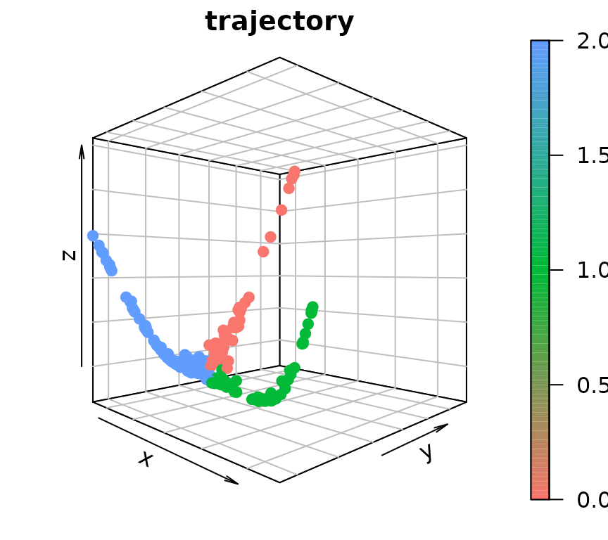

GeneTrajectory Tutorial
Rihao Qu, Francesco Strino
03/20/2024
GeneTrajectory.RmdOverview
GeneTrajectory is a method for inferring gene trajectories in scRNA-seq data, which facilitates understanding of gene dynamics underlying biological processes. The major workflow of GeneTrajectory comprises the following four main steps:
Step 1. Build a cell-cell kNN graph in which each cell is connected to its k-nearest neighbors. Find the shortest path connecting each pair of cells in the graph and denote its length as the graph distance between cells.
Step 2. Compute pairwise graph-based Wasserstein distance between gene distributions, which quantifies the minimum cost of transporting the distribution of a given gene into the distribution of another gene in the cell graph.
Step 3. Generate a low-dimensional representation of genes (using Diffusion Map by default) based on the gene-gene Wasserstein distance matrix. Identify gene trajectories in a sequential manner.
Step 4. Determine the order of genes along each gene trajectory.

Loading example data
The standard preprocessing can be done by employing the Seurat R package which includes: library normalization; finding variable features; scaling; generating PCA embedding (and UMAP embedding for visualization).
The preprocessed Seurat object for this tutorial can be downloaded from figshare.
# Import the tutorial dataset and relabel the celltypes for visualization
data_S <- readRDS("../../data/human_myeloid_seurat_obj.rds")
cluster_relabel <- c("0" = "CD14+ monocytes",
"1" = "Intermediate monocytes",
"2" = "CD16+ monocytes",
"3" = "Myeloid type-2 dendritic cells")
data_S$celltype <- cluster_relabel[as.character(data_S$cluster)]
DimPlot(data_S, group.by = "celltype", shuffle = T)
Gene-gene distance computation
In this tutorial, we demonstrate gene-gene distance computation by selecting the top 500 variable genes expressed by 1% to 50% of cells. The expected running time for this computation is approximately 1 to 3 minutes.
Select genes
assay <- "RNA"
DefaultAssay(data_S) <- assay
data_S <- FindVariableFeatures(data_S, nfeatures = 500)
all_genes <- data_S@assays[[assay]]@var.features
expr_percent <- apply(as.matrix(data_S[[assay]]@data[all_genes, ]) > 0, 1, sum)/ncol(data_S)
genes <- all_genes[which(expr_percent > 0.01 & expr_percent < 0.5)]
length(genes)## [1] 251Prepare the input for gene-gene distance computation
Next, we compute the Diffusion Map cell embedding using
RunDM. We then use GetGraphDistance to
construct the cell-cell kNN graph (K=10 in this example)
and calculate cell-cell graph distances (defined by the length of the
shortest path connecting two cells in the kNN graph). To improve
computation efficiency, we coarse-grain the cell graph by grouping cells
into N=500 “meta-cells”.
# Compute the Diffusion Map cell embedding
data_S <- GeneTrajectory::RunDM(data_S)
# Calculate cell-cell graph distances over a cell-cell kNN graph
cell.graph.dist <- GetGraphDistance(data_S, K = 10)## Constructing kNN graph## Constructing graph distance matrix## The largest graph distance is 35
# Coarse-grain the cell graph by grouping cells into `N`=500 "meta-cells"
cg_output <- CoarseGrain(data_S, cell.graph.dist, genes, N = 500)## Run k-means clustering## Coarse-grain matricesCompute gene-gene distances
The computation of gene-gene Wasserstein distances is by employing the package of Python Optimal Transport (POT). Here, we recommend users to set up a virtualenv using reticulate R package.
# Create a virtualenv using reticulate
if(!reticulate::virtualenv_exists('gene_trajectory')){
reticulate::virtualenv_create('gene_trajectory', packages=c('gene_trajectory'))
}
reticulate::use_virtualenv('gene_trajectory')
# Import the function to compute gene-gene distances
cal_ot_mat_from_numpy <- reticulate::import('gene_trajectory.compute_gene_distance_cmd')$cal_ot_mat_from_numpy
# Compute gene-gene distances (this is usually the most time-consuming step, which can take hours if the computation is done on thousands of genes over a large cell graph.)
gene.dist.mat <- cal_ot_mat_from_numpy(ot_cost = cg_output[["graph.dist"]], gene_expr = cg_output[["gene.expression"]])
rownames(gene.dist.mat) <- cg_output[["features"]]
colnames(gene.dist.mat) <- cg_output[["features"]]
dim(gene.dist.mat)Gene trajectory inference and visualization
After we get the gene-gene distance matrix, we construct the gene embedding by employing Diffusion Map.
gene_embedding <- GetGeneEmbedding(gene.dist.mat, K = 5)$diffu.embThe extraction of gene trajectories is done sequentially. The initial terminus node (terminus-1) is defined by the gene with the largest distance from the origin in the Diffusion Map embedding. A random-walk procedure is then employed on the gene graph to select the other genes that belong to the trajectory terminated at terminus-1. After retrieving genes for the first trajectory, we identify the terminus of the subsequent gene trajectory among the remaining genes and repeat the steps above. This is done sequentially until all detectable trajectories are extracted.
N: the number of trajectories to extract;t.list: the time step of random walk to extract each trajectory. Increasingtextracts a longer trajectory.K: this should be consistent with theKused in the previous step (GetGeneEmbedding).
# Extract 3 gene trajectories
gene_trajectory <- ExtractGeneTrajectory(gene_embedding, gene.dist.mat, N = 3, t.list = c(4,7,7), K = 5)
table(gene_trajectory$selected)##
## Trajectory-1 Trajectory-2 Trajectory-3
## 43 55 153
# Visualize gene trajectories
par(mar = c(1.5,1.5,1.5,1.5))
scatter3D(gene_embedding[,1],
gene_embedding[,2],
gene_embedding[,3],
bty = "b2", colvar = as.integer(as.factor(gene_trajectory$selected))-1,
main = "trajectory", pch = 19, cex = 1, theta = 45, phi = 0,
col = ramp.col(c(hue_pal()(3))))
# Extract the ordered list of genes along each gene trajectory
gene_list <- list()
for (i in 1:3){
gene_trajectory_sub <- gene_trajectory[which(gene_trajectory$selected == paste0("Trajectory-", i)),]
genes <- rownames(gene_trajectory_sub)[order(gene_trajectory_sub[, paste0("Pseudoorder", i)])]
gene_list[[i]] <- genes
}Visualize gene bin plots
To examine how each given gene trajectory is reflected over the cell graph, we can track how these genes are expressed across different regions in the cell embedding. Here, we would recommend users to apply ALRA imputation to smooth the expression values for generating gene bin plots.
We define gene bin score by splitting each gene trajectory into 5 consecutive gene bins.
N.bin: the number of gene bins along each gene trajectory;trajectories: gene trajectories to define gene bin score;assay: assay used to compute the score of each gene bin;reverse: a Boolean vector that indicates whether or not to reverse the gene order along each gene trajectory.
data_S <- AddGeneBinScore(data_S, gene_trajectory, N.bin = 5, trajectories = 1:3, assay = "alra", reverse = c(F, F, T))
# Visualize gene bin plots for each gene trajectory
FeaturePlot(data_S, pt.size = 0.05, features = paste0("Trajectory",1,"_genes", 1:5), ncol = 5, order = T) &
scale_color_gradientn(colors = rev(brewer_pal(palette = "RdYlBu")(10))) & NoLegend() & NoAxes() & theme(title = element_text(size = 10))
FeaturePlot(data_S, pt.size = 0.05, features = paste0("Trajectory",2,"_genes", 1:5), ncol = 5, order = T) &
scale_color_gradientn(colors = rev(brewer_pal(palette = "RdYlBu")(10))) & NoLegend() & NoAxes() & theme(title = element_text(size = 10))
FeaturePlot(data_S, pt.size = 0.05, features = paste0("Trajectory",3,"_genes", 1:5), ncol = 5, order = T) &
scale_color_gradientn(colors = rev(brewer_pal(palette = "RdYlBu")(10))) & NoLegend() & NoAxes() & theme(title = element_text(size = 10))Session information
## R version 4.3.1 (2023-06-16)
## Platform: x86_64-pc-linux-gnu (64-bit)
## Running under: Ubuntu 22.04.3 LTS
##
## Matrix products: default
## BLAS: /usr/lib/x86_64-linux-gnu/blas/libblas.so.3.10.0
## LAPACK: /usr/lib/x86_64-linux-gnu/openblas-pthread/liblapack.so.3; LAPACK version 3.10.0
##
## locale:
## [1] LC_CTYPE=en_US.UTF-8 LC_NUMERIC=C
## [3] LC_TIME=en_US.UTF-8 LC_COLLATE=en_US.UTF-8
## [5] LC_MONETARY=en_US.UTF-8 LC_MESSAGES=en_US.UTF-8
## [7] LC_PAPER=en_US.UTF-8 LC_NAME=C
## [9] LC_ADDRESS=C LC_TELEPHONE=C
## [11] LC_MEASUREMENT=en_US.UTF-8 LC_IDENTIFICATION=C
##
## time zone: America/New_York
## tzcode source: system (glibc)
##
## attached base packages:
## [1] stats graphics grDevices utils datasets methods base
##
## other attached packages:
## [1] plot3D_1.4 Matrix_1.6-0 GeneTrajectory_1.0.0
## [4] dplyr_1.1.3 viridis_0.6.4 viridisLite_0.4.2
## [7] ggplot2_3.4.3 scales_1.2.1 SeuratObject_4.1.3
## [10] Seurat_4.3.0.1
##
## loaded via a namespace (and not attached):
## [1] RColorBrewer_1.1-3 rstudioapi_0.15.0 jsonlite_1.8.7
## [4] magrittr_2.0.3 modeltools_0.2-23 spatstat.utils_3.0-3
## [7] farver_2.1.1 rmarkdown_2.24 fs_1.6.3
## [10] ragg_1.2.5 vctrs_0.6.3 ROCR_1.0-11
## [13] memoise_2.0.1 spatstat.explore_3.2-3 additivityTests_1.1-4.1
## [16] htmltools_0.5.6 sass_0.4.7 sctransform_0.3.5
## [19] parallelly_1.36.0 KernSmooth_2.23-22 bslib_0.5.1
## [22] htmlwidgets_1.6.2 desc_1.4.2 ica_1.0-3
## [25] plyr_1.8.8 plotly_4.10.2 zoo_1.8-12
## [28] cachem_1.0.8 misc3d_0.9-1 igraph_1.5.1
## [31] mime_0.12 lifecycle_1.0.3 pkgconfig_2.0.3
## [34] R6_2.5.1 fastmap_1.1.1 fitdistrplus_1.1-11
## [37] future_1.33.0 shiny_1.7.5 digest_0.6.33
## [40] rARPACK_0.11-0 colorspace_2.1-0 patchwork_1.1.3
## [43] rprojroot_2.0.3 tensor_1.5 RSpectra_0.16-1
## [46] irlba_2.3.5.1 textshaping_0.3.6 labeling_0.4.3
## [49] progressr_0.14.0 fansi_1.0.4 spatstat.sparse_3.0-2
## [52] httr_1.4.7 polyclip_1.10-4 abind_1.4-5
## [55] compiler_4.3.1 withr_2.5.0 highr_0.10
## [58] MASS_7.3-60 tools_4.3.1 lmtest_0.9-40
## [61] flexclust_1.4-1 httpuv_1.6.11 future.apply_1.11.0
## [64] goftest_1.2-3 glue_1.6.2 nlme_3.1-162
## [67] promises_1.2.1 grid_4.3.1 Rtsne_0.16
## [70] cluster_2.1.4 reshape2_1.4.4 generics_0.1.3
## [73] gtable_0.3.4 spatstat.data_3.0-1 class_7.3-22
## [76] tidyr_1.3.0 data.table_1.14.8 sp_2.0-0
## [79] utf8_1.2.3 spatstat.geom_3.2-5 RcppAnnoy_0.0.21
## [82] biclust_2.0.3.1 ggrepel_0.9.3 RANN_2.6.1
## [85] pillar_1.9.0 stringr_1.5.0 later_1.3.1
## [88] splines_4.3.1 lattice_0.21-8 FNN_1.1.3.2
## [91] survival_3.5-5 deldir_1.0-9 tidyselect_1.2.0
## [94] miniUI_0.1.1.1 pbapply_1.7-2 knitr_1.43
## [97] gridExtra_2.3 scattermore_1.2 stats4_4.3.1
## [100] xfun_0.40 matrixStats_1.0.0 stringi_1.7.12
## [103] lazyeval_0.2.2 yaml_2.3.7 evaluate_0.21
## [106] codetools_0.2-19 tcltk_4.3.1 tibble_3.2.1
## [109] cli_3.6.1 uwot_0.1.16 xtable_1.8-4
## [112] reticulate_1.35.0 systemfonts_1.0.4 munsell_0.5.0
## [115] jquerylib_0.1.4 Rcpp_1.0.11 globals_0.16.2
## [118] spatstat.random_3.1-6 png_0.1-8 parallel_4.3.1
## [121] ellipsis_0.3.2 pkgdown_2.0.7 listenv_0.9.0
## [124] ggridges_0.5.4 leiden_0.4.3 purrr_1.0.2
## [127] rlang_1.1.1 cowplot_1.1.1